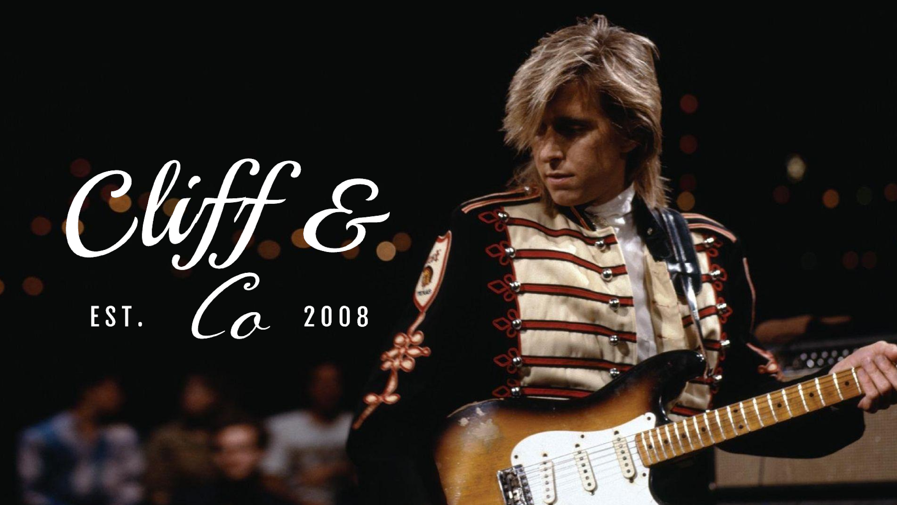

WE LOVE MUSIC.
PURE CREATION.
We are an Australian guitar manufacturer established in 2008, and we pride ourselves on the unparalleled quality and range of our guitars. All of our guitars are homemade, right here in Brisbane, Queensland.

OUR FOUNDER.
Below is a video of our founder, Eric Johnson, playing the first Cliff & Co guitar prototype, which was named after his song “Cliffs of Dover”. He performed this in Austin, Texas. He considers it as one of his best performances ever